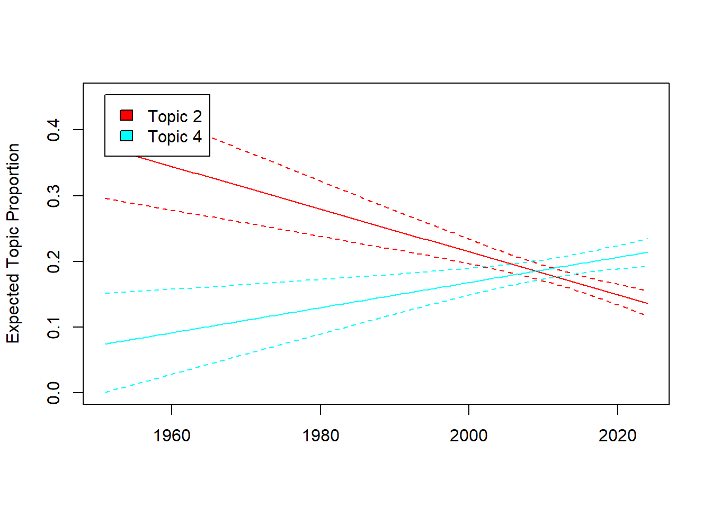

#install.packages("tidyverse)
#install.packages("RCurl")
#install.packages("quanteda")
#install.packages("stm")
#install.packages("reshape2")
library("tidyverse")
library("RCurl")
library("quanteda")
library("stm")
library("reshape2")Sitzung 4: Topic Modeling
1. Pakete laden und Daten einlesen
Zunächst installieren alle Pakete, die wir für diese Sitzung brauchten (z.B. tidyverse). Ihr braucht install.packages() nur, wenn ihr die Pakete im Methodencafe noch nicht installiert hattet.
Neu hinzugekommen seit dem Methodencafe ist das stminsights-Paket, das ihr neu installieren müsstest.
Wenn das bei euch nicht klappt, ist das kein Problem - wir brauchen das Paket nur für eine zusätzliche Analyse am Ende.
install.packages("stminsights")
library("stminsights")Nun lesen wir die Daten wieder ein und führen die bereits erlernten Preprocessing-Schritte, inkl. der Transformation in eine Document-Feature-Matrix, aus:
# Daten laden
url <- getURL("https://raw.githubusercontent.com/valeriehase/textasdata-ms/main/data/data_tvseries.csv")
data <- read.csv2(text = url)
# Preprocessing
tokens <- tokens(data$Description,
what = "word", #Tokenisierung, hier zu Wörtern als Analyseeinheit
remove_punct = TRUE, #Entfernung von Satzzeichen
remove_numbers = TRUE) %>% #Entfernung von Zahlen
# Kleinschreibung
tokens_tolower() %>%
# Entfernung von Stoppwörtern
tokens_remove(stopwords("english")) %>%
# Stemming
tokens_wordstem()
# Text-as-Data Repräsentation als Document-Feature-Matrix
dfm <- tokens %>%
dfm() %>%
# Relative pruning
dfm_trim( min_docfreq = 0.005,
max_docfreq = 0.99,
docfreq_type = "prop",
verbose = TRUE) Jetzt sind wir bereit für das Topic Modeling!
2. Anzahl Themen K
Relevante Entscheidungen für ein Topic-Modeling umfassen u.a. die Anzahl von Themen K, die das Modell identifiziert soll (mit anderen Aspekten, wie der Wahl des Algorithms oder weiterer Hyperparameter, beschäftigen wir uns heute nicht).
Zunächst müssen wir unsere dfm in ein stm-Objekt umwandeln, damit das stm-Paket, das wir für die Berechnung des Topic Models brauchen, das Datenformat versteht.
# DFM in STM-Objekt umwandeln
dfm_stm <- convert(dfm, to = "stm")2.1 Statistischer Fit
Ein Kriterium für die Entscheidung bzgl. K kann die der statistische Fit sein.
Mit der Funktion searchK()aus dem stm-Paket berechnen wir den statistischen Fit hier beispielhaft für Modelle mit 4 vs. 6 Themen.
Das Argument verbose, das wir hier auf TRUE setzen, führt dazu, dass uns R alle iterativen Berechnungen ausgibt. Wir können also nachverfolgen, was der Computer gerade berechnet.
# dfm_stm$documents: Welche Dokumente nutzen wir?
# dfm_stm$vocab: Welche Features nutzen wir?
stat_fit <- searchK(dfm_stm$documents, dfm_stm$vocab, K = c(4,6), verbose = TRUE)Um das Ergebnis von der Berechnung zu interpretieren ploten wir die Daten. Hierfür nutzen wir das Packet ggplot2.
# Wir speichern die Ergebnise im Objekt "Plot" ab
plot <- data.frame("K" = c(4, 6),
"Coherence" = unlist(stat_fit$results$semcoh),
"Perplexity" = unlist(stat_fit$results$heldout))
# Wir wandeln das Format zu einem "long format" um
plot <- melt(plot, id = c("K"))
#Plot erstellen
ggplot(plot, aes(K, value, color = variable)) +
geom_line(linewidth = 1.5, show.legend = FALSE) +
scale_x_continuous(breaks = c(4, 6)) +
facet_wrap(~ variable, scales = "free_y") +
labs(x = "Anzahl Themen K",
title = "Statistischer Fit für Modelle mit K = 4 und K = 6")
Als nächstes schauen wir auf die Interpretierbarkeit der Themen!
2.2 Inhaltliche Interpretierbarkeit
Eine weitere Grundlage, um sich für die Anzahl der Themen zu entscheiden, sind Top Features und Top Documents: Welches Modell ist im Vergleich besser interpretierbar?
Dafür müssen zunächst die einzelnen Modelle mit K = 4 bzw. K = 6 berechnet werden.
#Model mit K = 4 berechnen
model_4K <- stm(documents = dfm_stm$documents,
vocab = dfm_stm$vocab,
K = 4)
#Model mit K = 6 berechnen
model_6K <- stm(documents = dfm_stm$documents,
vocab = dfm_stm$vocab,
K = 6)2.2.1 Top Features
Schauen wir uns an, wie sinnvoll interpretierbar die einzelnen Themen auf Basis ihrer Features wirken:
Um die 10 Top Features für jedes Modell zu berechnen, nutzen wir die labelTopics()-Funktion aus dem stm-Paket.
Als Argumente bestimmen wir ein Modell sowie über das n-Argument, das nur die zehn wichtigsten Features ausgegeben werden sollen. Für den anschliessenden Vergleich speichern wir die Top Features im Objekt topics_4 bzw. topics_6 ab:
# Top Features für K = 4
topics_4K <- labelTopics(model_4K, n = 10)
topics_4K <- data.frame("features" = t(topics_4K$frex))
colnames(topics_4K) <- paste("Topics", c(1:4))
topics_4K Topics 1 Topics 2 Topics 3 Topics 4
1 solv find citi discov
2 mission everi life mother
3 crime head york los
4 part embark job children
5 live name vampir death
6 unit chang new world
7 ident seri search boy
8 special boss just come
9 relationship horror friend demon
10 coupl includ misadventur angel#Top Features für K = 6
topics_6K <- labelTopics(model_6K, n = 10)
topics_6 <- data.frame("features" = t(topics_6K$frex))
colnames(topics_6) <- paste("Topics", c(1:6))
topics_6 Topics 1 Topics 2 Topics 3 Topics 4 Topics 5 Topics 6
1 polic best angel human show murder
2 detect school los earth comedi crimin
3 solv return live surviv around agent
4 crime home love war demon serial
5 team busi centuri order various save
6 special high teen alien name colleg
7 case york vampir space featur wealthi
8 person famili compani danger event american
9 depart troubl make embark meet killer
10 princ new look job seri girlDie Top Features geben bereits einen ersten Eindruck, worum es sich inhaltlich bei den Topics handelt.
2.2.1 Top Documents
Zusätzlich helfen die Top Documents eines Themas, dieses zu interpretieren. Um diese zu finden, nutzen wir die findThoughts()-Funktion des stm-Pakets.
Als Argumente werden wieder das jeweilige Modell, die Serienbeschreibungen aus unserem Dataframe via daten_df$Description, das zu untersuchende Topic und die Anzahl der zu identifizierenden Top Documents ausgegeben.
Schauen wir Topic 1 an:
findThoughts(model_4K, data$Description, topics=1, n=3)
Topic 1:
A drama centered on the personal and professional lives of five surgical interns and their supervisors.
An elite unit, led by an ex-homicide cop, which is linked to the Miami-Dade Police Department, uses all possible resources and skills at their disposal to solve complex crimes in cross-cultural Miami.
Follows the journey of a time traveler from the post-apocalyptic future who appears in present day on a mission to locate and eradicate the source of a deadly plague that will nearly destroy the human race.Die Top Documents zeigen, ähnlich wie die Top Features, dass Topic 1 Krimi-Serien zusammenfasst. Für eine Evaluierung der Themen müssen dann für beide Modelle und alle jeweiligen Themen die Top Documents ausgegeben und die Ergebnisse verglichen werden.
2.3. Rank-1 Metrik
Mit Hilfe der Rank-1 Metrik lässt sich zuletzt zeigen, wie oft ein Thema als Hauptthema vorkommt. Hier wird jedem Dokument ein einziges Hauptthema zugeordnet - nämlich das, für welches das Dokument laut der Document-Topic-Matrix die höchste bedingte Wahrscheinlichkeit hat.
So liessen sich zudem Themen identifizieren, die z. B. wenig prävalent und damit ggf. irrelevant sind.
Im ersten Schritt berechnen wir die Document-Topic-Matrix, in der für jeden Dokument zusammengefasst wird, welches Thema wie gut zum Dokument passt. Das machen wir mit der make.dt()Funktion aus dem stm-Paket.
theta_4K <- make.dt(model_4K)
theta_6K <- make.dt(model_6K)
#Schauen wir uns kurz beispielhaft die Matrix an:
theta_4K %>%
head() docnum Topic1 Topic2 Topic3 Topic4
1: 1 0.2416641 0.2255669 0.2856377 0.2471312
2: 2 0.2301722 0.1771304 0.2345128 0.3581846
3: 3 0.1657307 0.1569436 0.2297371 0.4475887
4: 4 0.3713389 0.1578832 0.3093944 0.1613836
5: 5 0.1539901 0.1199690 0.2422572 0.4837837
6: 6 0.1588818 0.2754584 0.2464439 0.3192159Jetzt nehmen wir diese Matrix und ordnen jedem Dokument das Thema mit der höchsten Prävalenz zu.
Das machen wir einmal für K = 4.
# Zuerst erstellen wir eine leere Spalte in unserem Dataframe data
data$Rank1_K4 <- NA # K = 4 (Anzahl der Themen, wird später "aufgefüllt")
# Berechnung von Rank-1 Metrik für K = 4
for (i in 1:nrow(data)){ # Schleife: Für jede nachfolgende Zeile...
column <- theta_4K[i,-1] # Wähle alle Spalten der Document-Topic-Matrix aus (ohne die erste, die nur doc_id enthält)
maintopic <- colnames(column)[which(column == max(column))] # Bestimmung des Hauptthemas (Spalte mit dem höchsten Wert)
data$Rank1_K4[i] <- maintopic # Zuweisung des Hauptthemas zur entsprechenden Zeile im Datenrahmen
}
# Erzeugung einer Häufigkeitstabelle für Rank-1 Themen bei K = 4
data %>%
# absolute Anzahl jedes Themas
count(Rank1_K4) %>%
# Ausgabe in Prozent (perc)
mutate(perc = prop.table(n)*100,
perc = round(perc, 2)) Rank1_K4 n perc
1 Topic1 106 11.78
2 Topic2 67 7.44
3 Topic3 275 30.56
4 Topic4 452 50.22Und dann das gleiche Spiel für K = 6.
# Zuerst erstellen wir eine leere Spalte in unserem Dataframe data
data$Rank1_K6 <- NA # K = 6 (Anzahl der Themen, wird später "aufgefüllt")
# Berechnung von Rank-1 Metrik für K = 6
for (i in 1:nrow(data)){ # Schleife: Für jede nachfolgende Zeile...
column <- theta_6K[i,-1] # Wähle alle Spalten der Document-Topic-Matrix aus (ohne die erste, die nur doc_id enthält)
maintopic <- colnames(column)[which(column == max(column))] # Bestimmung des Hauptthemas (Spalte mit dem höchsten Wert)
data$Rank1_K6[i] <- maintopic # Zuweisung des Hauptthemas zur entsprechenden Zeile im Datenrahmen
}
# Erzeugung einer Häufigkeitstabelle für Rank-1 Themen bei K = 6
data %>%
# absolute Anzahl jedes Themas
count(Rank1_K6) %>%
# Ausgabe in Prozent (perc)
mutate(perc = prop.table(n)*100,
perc = round(perc, 2)) Rank1_K6 n perc
1 Topic1 166 18.44
2 Topic2 154 17.11
3 Topic3 135 15.00
4 Topic4 199 22.11
5 Topic5 133 14.78
6 Topic6 113 12.56Die Ergebnisse zeigen, dass bei K = 6 die Verteilung der Dokumente wesentlich gleichmäßiger ausfällt.
Für eine endgültige Entscheidung von K sollten diese Metriken für deutlich mehr als zwei Ks ausgegeben werden.
In diesem Fall deuten die ersten Ergebnisse darauf hin, dass ein Modell mit 6 Themen den TV-Seriendatensatz ggf. besser abbildet als ein Modell mit 4 Themen.
3. Analyse
3.1 Einfluss unabhängiger Variablen
Für eine beispielhafte Analyse nehmen wir nun an, dass wir uns für K = 6 Themen entschieden haben. Das stm-Paket bietet uns jetzt die Möglichkeit, eine unabhängige Variable einzubeziehen, um die Prävalenz (prevalence-Argument) oder den Inhalt (content-Argument) von Themen zu modellieren:
Gehen wir als Arbeitshypothese davon aus, dass das Jahr, in dem eine Serie zuerst ausgestrahlt wurde, einen Einfluss auf das dort beschriebene Thema hat.
Beispielsweise könnte es sein, dass unterschiedliche Jahre von unterschiedlichen “Genres” geprägt wurden.
Zunächst nutzen wir wieder reguläre Ausdrücke, um das Erstausstrahlungs-Jahr aller Serien zu identifizieren. Bitte beachtet dabei, dass wir fehlende Werte einfach mit dem Mittelwert von Start_Year ersetzen. Das würde man normalerweise machen, aber fehlende Werte für unabhängige Variable sind im stm-Paket höllisch schwierig zu handeln - das tun wir uns heute nicht an.
data <- data %>%
# Wir entfernen alle nicht-numerische Zeichen, um "-" zu entfernen
mutate(Year_Start = gsub("[^0-9]", "", Year),
# Wir beschränken uns nur auf die ersten 4 Jahre
Year_Start = substr(Year_Start, 1, 4),
# Wir verwandeln das ganze in eine numerische Variable
Year_Start = as.numeric(Year_Start),
#Wir ersetzen fehlende Werte mit dem Mittelwert (2010)
Year_Start = replace(Year_Start,
is.na(Year_Start),
2010))Dann nehmen wir die Variable Year_Start als unabhängige Variable in unser Modell auf:
# Wir lassen das angepasste Modell laufen
model_6K_year <- stm(documents = dfm_stm$documents,
vocab = dfm_stm$vocab,
K = 6,
prevalence = ~ Year_Start,
data = data)Jetzt können wir mit der Funktion estimateEffect() aus dem stm-Paket berechnen, inwiefern das Erscheinungsjahr einer Serie einen Einfluss auf das dort behandelte Thema hat:
effect <- estimateEffect(formula = ~ Year_Start,
stmobj = model_6K_year,
metadata = data)Diesen Effekt können wir nun auch grafisch darstellen.
Hat das Erscheinungsjahr einen Effekt auf z.B. Drama vs. Sci-Fi Serien?
topics_6 %>%
select(`Topics 2`, `Topics 4`) Topics 2 Topics 4
1 best human
2 school earth
3 return surviv
4 home war
5 busi order
6 high alien
7 york space
8 famili danger
9 troubl embark
10 new jobWir plotten die Ergebnisse und sehen - es scheint Unterschiede über die Zeit hinweg zu geben!
plot(effect, "Year_Start", method = "continuous", topics = c(2,4), model = model_6K_year)
3.2 Visualisierung des Topic Models
Um unser Modell zu verstehen, können wir es mit dem stminsights-Paket visualisieren. Dafür:
- Erstellen wir zunächst das Objekt
out, indem alle wichtigen Infos gespeichert sind - Starten wir dann die zugehörige Shiny-App mit
run_stminsights() - Laden dort anschliessend unser R-Environment hoch.
Dieses findet ihr unter Sitzung 4 zum Download, solltest ihr bis hierhin Probleme gehabt haben, den Code auszuführen.
# Wir erstellen das Objekt out, in dem alle wichtigen Infos gespeichert sind
out <- list(documents = dfm_stm$documents,
vocab = dfm_stm$vocab,
meta = dfm_stm$meta)
# Wir lassen die Shiny App laufen
run_stminsights()# Wir speichern das Environment ab, um es hochzuladen
save.image("Sitzung4.RDATA")Aufgabe 1 üìå
Aufgabe 1.1 (Basis)
Könnt ihr testen, wie sich das Modell verändert, wenn wir mit K = 10 Serien arbeiten?
Aufgabe 1.2 (Fortgeschritten)
Könnt ihr mittels des Datensatzes zu Horoskopen testen, ob Zwillinge und Wassermänner andere Themen in ihren Horoskopen vorhergesagt kriegen?